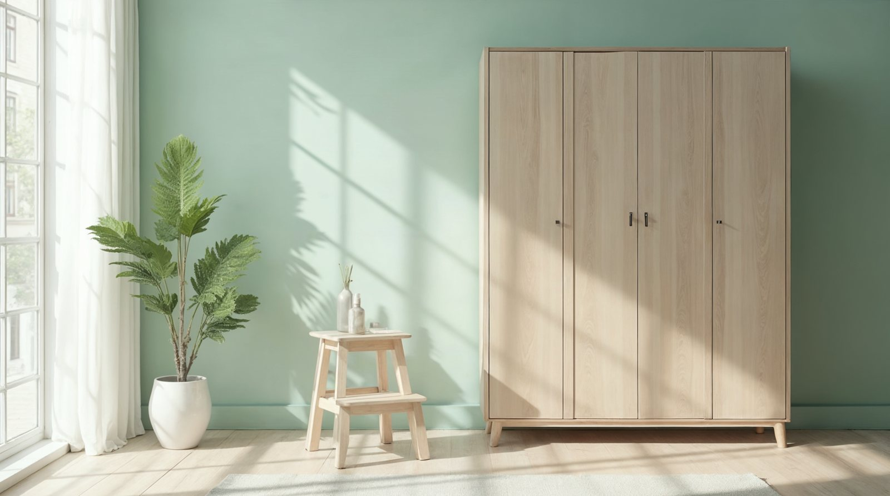
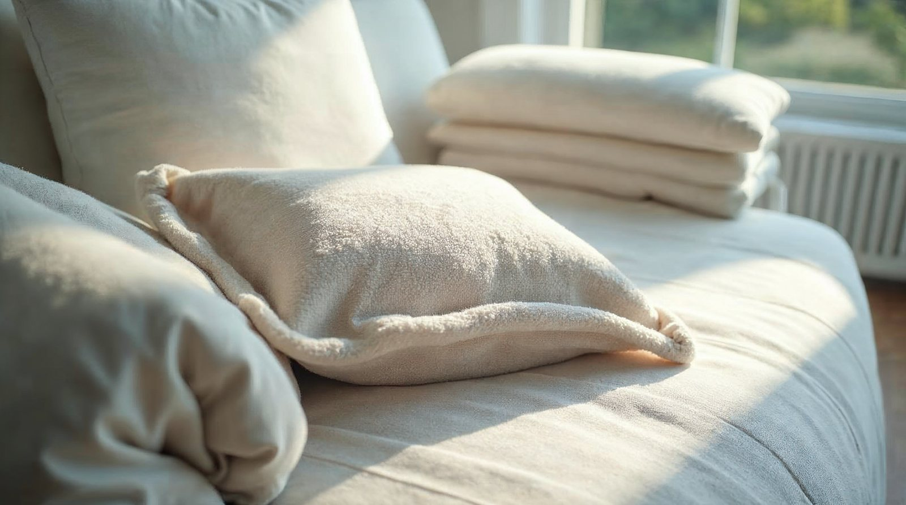
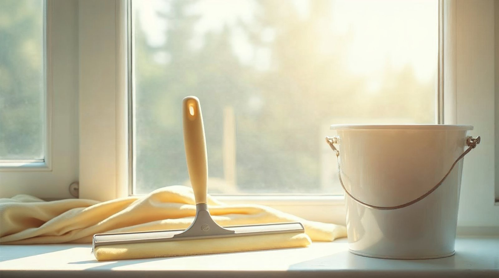
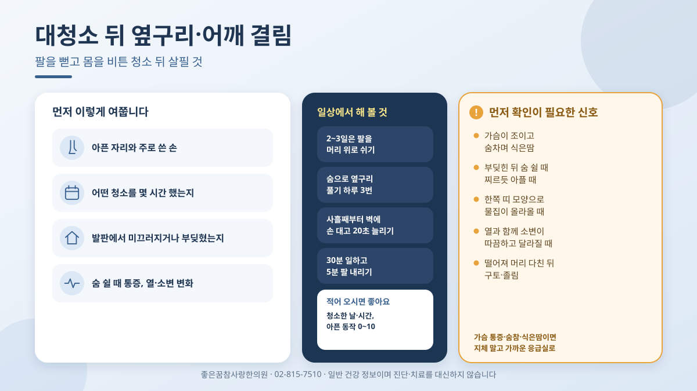

이종호 한의사 감수좋은꿈참사랑한의원 대표원장 (한의사 면허번호 19769)발행 2026-11-27 · 수정 2026-11-27
이 글의 차례
연말이 되면 미뤄 둔 창문과 방충망을 닦고, 옷장 위 상자와 주방 위 수납장을 정리하고, 커튼을 떼어 빨았다가 다시 다는 집이 많습니다. 그렇게 하루 이틀 대청소를 하고 나면 다음 날 아침 한쪽 옆구리가 당기고, 겨드랑이 뒤에서 날개뼈 아래까지 뻐근하며, 팔을 올리거나 몸을 돌릴 때 어깨 뒤쪽이 결리는 분이 있습니다.
팔을 머리 위로 뻗은 채 몸을 옆으로 기울이고 비트는 동작, 의자나 발판 위에서 까치발로 버티는 자세는 평소 잘 쓰지 않던 옆구리 근육과 겨드랑이 뒤의 넓은 등 근육, 어깨 뒤쪽 근육을 한꺼번에 오래 쓰게 하기 때문입니다. 이런 결림은 대개 무리한 동작을 멈추고 며칠 동안 아프지 않은 범위에서 움직이며 따뜻하게 풀어 주면 차츰 가라앉습니다.
다만 숨을 들이쉬거나 기침할 때 갈비뼈 한 점이 찌르듯 아프거나, 피부가 따끔거리다 띠 모양 물집이 올라오거나, 열과 소변 이상이 함께 있거나, 움직임과 상관없이 가슴이 조이듯 아프다면 근육 결림으로 넘기지 말고 먼저 확인이 필요합니다.
왜 창문 닦기와 높은 곳 정리 뒤에 옆구리와 어깨가 결릴까요
- 창문 위쪽을 닦으려면 팔을 머리 위로 뻗은 채 원을 그리듯 문지르게 됩니다. 이때 어깨 뒤쪽 근육과 날개뼈 주변 근육은 팔을 들어 올린 채 버티느라 쉬지 못하고, 수십 번씩 같은 동작을 되풀이합니다.
- 창틀 구석이나 베란다 창 바깥쪽을 닦을 때는 손이 더 멀리 가도록 몸을 옆으로 기울이고 비틉니다. 팔을 뻗은 쪽 옆구리 근육과 겨드랑이 뒤에서 허리까지 이어지는 넓은 등 근육이 길게 늘어난 채 힘을 쓰게 되어, 다음 날 그 줄기를 따라 당기는 느낌이 남기 쉽습니다.
- 옷장 위나 주방 위 수납장에서 상자를 내릴 때는 무게가 몸에서 먼 곳, 머리보다 높은 곳에 있습니다. 같은 무게라도 몸에서 멀고 높을수록 어깨와 옆구리가 받는 부담이 커집니다.
- 의자나 작은 발판 위에서 까치발을 들면 몸이 흔들리지 않게 옆구리와 허리 근육이 계속 긴장합니다. 발판이 좁거나 흔들리면 그 긴장은 더 커집니다.
- 커튼 고리를 하나씩 빼고 끼우는 일은 팔을 든 채 손끝으로 작은 동작을 오래 하게 만들어 어깨 위쪽과 목까지 굳게 합니다.
- 12월 베란다는 바깥 공기처럼 차갑습니다. 찬 곳에서 몸이 움츠러든 상태로 힘을 쓰면 근육이 쉽게 굳고, 땀이 식으며 결림이 더해질 수 있습니다.
- 평소에는 팔을 어깨 높이 위로 오래 들 일이 드물어, 하루에 몰아서 하는 대청소는 그만큼 낯선 부담이 됩니다. 특히 한쪽 손만 계속 쓰면 그쪽 옆구리와 어깨만 결리는 경우가 많습니다.
- 한의학에서는 무리하게 쓴 근육에 기혈이 고르게 돌지 못하고 찬 기운까지 더해지면 결리고 당긴다고 봅니다. 그래서 아픈 자리만이 아니라 목과 허리, 몸의 찬 정도, 잠과 피로까지 함께 살핍니다.

근육 결림인지, 다른 원인인지 어떻게 나눠 볼까요
- 근육 결림은 팔을 올리거나 몸을 돌리고 옆으로 굽히는 특정 동작에서 아프고, 가만히 있으면 덜합니다. 아픈 근육을 손으로 눌렀을 때 뻐근한 자리가 넓게 느껴지는 경우가 많습니다.
- 갈비뼈에 금이 가거나 부딪혀 멍이 든 경우는 한 점을 눌렀을 때 찌르듯 아프고, 숨을 깊게 쉬거나 기침, 재채기를 할 때 날카롭게 아픕니다. 발판에서 미끄러지거나 창틀, 가구 모서리에 부딪힌 일이 있었다면 더 의심합니다.
- 대상포진은 처음에 몸 한쪽에 띠 모양으로 따끔거리거나 화끈거리고 옷이 스치기만 해도 예민하다가, 며칠 뒤 그 자리에 붉은 반점과 물집이 올라옵니다. 움직임과 상관없이 피부가 아픈 느낌이 특징입니다.
- 콩팥이나 요로 문제는 옆구리 뒤쪽, 갈비뼈 아래가 묵직하거나 쥐어짜듯 아프고, 열이나 오한, 소변볼 때 따끔함, 소변 색 변화가 함께 있을 수 있습니다.
- 가슴이 조이거나 누르는 듯한 통증이 왼쪽 어깨나 팔, 턱으로 번지고 숨이 차며 식은땀이 난다면 근육 문제가 아니라 심장 쪽 확인이 먼저입니다. 이런 통증은 몸을 움직이는 것과 상관없이 찾아옵니다.
먼저 이렇게 여쭙니다
- 아픈 자리를 손으로 짚어 주실 수 있나요? 옆구리, 겨드랑이 뒤, 날개뼈 아래, 어깨 뒤쪽 가운데 어디인지 여쭙니다.
- 어떤 청소를 몇 시간 정도 하셨나요? 창문, 수납장, 커튼 가운데 무엇을 가장 오래 하셨는지 여쭙니다.
- 주로 어느 손으로 닦고 들어 올리셨나요?
- 의자나 사다리, 발판 위에서 일하셨나요? 미끄러지거나 어딘가에 부딪힌 일은 없었나요?
- 팔을 올릴 때, 몸을 돌릴 때, 옆으로 굽힐 때 가운데 언제 가장 불편한가요?
- 숨을 깊게 쉬거나 기침할 때도 아픈가요?
- 아픈 자리 피부가 따끔거리거나 옷이 스치기만 해도 예민하지는 않나요?
- 열, 오한, 소변 불편이 함께 있나요?
- 예전에 어깨나 허리를 다쳐 치료받은 적이 있거나, 복용 중인 약이 있나요?

일상에서 먼저 해 볼 수 있는 것
첫 하루 이틀: 아프지 않은 범위만 움직이기
- 결리는 쪽 팔로 무거운 것을 들거나 머리 위로 뻗는 일은 2~3일 쉽니다. 남은 청소는 미뤄 두어도 괜찮습니다.
- 그렇다고 하루 종일 가만히 누워 있기보다, 아프지 않은 범위에서 팔을 가슴 높이까지 천천히 들었다 내리기를 한 번에 10회, 하루 서너 번 해 봅니다.
- 부딪혀서 붓거나 멍이 든 자리는 첫 하루 이틀은 수건으로 감싼 냉찜질을 10~15분씩 합니다. 부딪힌 일 없이 뻐근하고 결리기만 하다면 따뜻한 찜질을 15분 정도 해 주는 편이 편한 분이 많습니다.
- 찜질팩이나 핫팩은 피부에 직접 대지 않고, 잠들 때는 떼어 둡니다.
숨으로 옆구리 풀기
- 등을 기대고 편하게 앉아 결리는 쪽 갈비뼈 옆에 손을 얹습니다. 코로 숨을 넷 셀 동안 들이쉬며 손 아래 갈비뼈가 옆으로 벌어지는 느낌을 찾고, 여섯 셀 동안 천천히 내쉽니다. 다섯 번씩, 하루 세 번 합니다.
- 숨을 들이쉴 때 찌르듯 아프다면 억지로 크게 쉬지 말고 편한 만큼만 쉽니다. 찌르는 통증이 계속되면 확인이 필요합니다.
사흘째부터: 천천히 늘리기
- 벽 옆에 서서 결리는 쪽 손바닥을 벽에 대고, 반대쪽으로 몸을 아주 살짝 기울여 옆구리가 기분 좋게 늘어나는 정도에서 20초 머뭅니다. 좌우 세 번씩, 아픈 느낌이 들면 각도를 줄입니다.
- 문틀에 양 팔꿈치를 어깨보다 조금 낮게 대고 한 발 앞으로 내디뎌 가슴 앞을 20초 늘립니다. 팔을 높이 들어 올린 채로는 하지 않습니다.
- 의자에 앉아 양쪽 날개뼈를 등 가운데로 살짝 모았다가 풀기를 10회 합니다.
- 따뜻한 물로 샤워한 뒤 몸이 데워졌을 때 하면 한결 편합니다.
남은 대청소는 이렇게 나누기
- 하루에 한 구역만 정하고, 30분 일하면 5분은 팔을 내리고 쉽니다.
- 창문 위쪽은 긴 손잡이가 달린 밀대형 창문 닦이를 쓰고, 몸을 옆으로 기울이는 대신 발을 옮겨 닦을 곳 정면에 섭니다.
- 손을 번갈아 씁니다. 오른손으로 다섯 번 닦았으면 왼손으로 다섯 번 닦는 식입니다.
- 높은 곳 정리에는 바닥이 넓고 미끄럼 방지가 된 발판을 쓰고, 바퀴 달린 의자나 흔들리는 의자에는 올라가지 않습니다. 가능하면 가족이 아래에서 발판을 잡아 줍니다.
- 상자는 가슴 높이까지만 들고 머리 위로 올리지 않습니다. 무거운 물건은 아래 칸에, 가벼운 물건을 높은 칸에 둡니다.
- 베란다 창 바깥쪽은 몸을 창밖으로 내밀어 닦지 않습니다. 손이 닿지 않는 곳은 양면 자석 창문 닦이 같은 도구를 쓰거나 다음으로 미룹니다.
- 베란다에서 일할 때는 얇은 겉옷을 걸쳐 몸이 식지 않게 하고, 땀이 나면 바로 갈아입습니다.
잠잘 때
- 결리는 쪽을 아래로 두고 눕기 어렵다면 반대쪽으로 눕고, 가슴 앞에 베개를 하나 안아 위쪽 팔이 앞으로 떨어지지 않게 받칩니다.
- 똑바로 누울 때는 무릎 아래에 쿠션을 받치면 허리와 옆구리 긴장이 덜합니다.
상황별 예시
- 예를 들어 하루 동안 집 안 창문 여섯 짝과 방충망을 오른손으로만 닦은 경우, 다음 날 오른쪽 겨드랑이 뒤에서 허리 위까지 길게 당기는 느낌이 생길 수 있습니다. 2~3일은 오른팔을 머리 위로 올리는 일을 쉬고, 숨으로 옆구리 풀기와 벽 옆구리 늘리기를 천천히 해 봅니다.
- 예를 들어 주방 위 수납장에서 김장 용기나 냄비 상자를 꺼내다 상자가 생각보다 무거워 몸을 비틀며 받아 낸 경우, 그 순간 옆구리가 '뜨끔'했다면 근육이 놀란 것일 수 있습니다. 그날은 무리하지 말고, 숨 쉴 때 한 점이 찌르듯 아프거나 사흘이 지나도 줄지 않으면 확인을 받습니다.
- 예를 들어 식탁 의자 위에 올라가 커튼 레일에 고리를 다시 끼우다 의자가 흔들려 창틀에 옆구리를 부딪힌 경우, 부딪힌 자리를 눌렀을 때 아프고 기침할 때 날카롭다면 갈비뼈 쪽 확인이 먼저입니다. 숨이 차거나 통증이 심해지면 지체하지 않고 병원에 갑니다.
- 예를 들어 대청소를 마친 지 이틀 뒤부터 오른쪽 옆구리 피부가 따끔거리고 옷이 스치기만 해도 쓰라린데 움직임과는 상관이 없는 경우, 청소 탓으로만 보지 말고 피부에 물집이 올라오는지 살피며 빨리 진료를 받습니다.

자주 하는 오해
- 결릴수록 세게 주무르고 꾹꾹 눌러야 풀린다고 여기기 쉽지만, 첫 며칠 동안 세게 누르면 오히려 근육이 더 예민해질 수 있습니다. 가볍게 쓸어 주는 정도가 좋습니다.
- 아파도 스트레칭을 끝까지 해야 한다고 생각하는 분도 있습니다. 통증이 올라오기 전까지만 늘리고, 숨을 참지 않는 것이 좋습니다.
- 옆구리가 아프면 모두 콩팥 문제라고 걱정하기도 하지만, 대청소 뒤 움직일 때만 아프고 열이나 소변 이상이 없다면 근육 쪽 결림인 경우가 많습니다. 다만 열이나 소변 이상이 있다면 꼭 확인합니다.
- 한 번 결렸으니 남은 청소를 하루에 몰아서 빨리 끝내자고 생각하기 쉽지만, 같은 근육을 또 몰아 쓰면 회복이 늦어질 수 있습니다.
- 젊으니 금방 풀릴 거라 여기고 팔을 계속 쓰기도 합니다. 나이와 상관없이 낯선 동작을 오래 하면 결림은 생길 수 있습니다.
스스로 점검해 보세요
- 대청소 때 팔을 머리 위로 올린 채 30분 넘게 일했다.
- 한쪽 손만 계속 써서 닦거나 들어 올렸다.
- 의자나 좁은 발판 위에서 까치발로 일했다.
- 무거운 상자를 머리보다 높은 곳에서 내렸다.
- 팔을 올리거나 몸을 돌릴 때만 아프고, 가만히 있으면 덜하다.
- 숨을 깊게 쉬거나 기침할 때는 아프지 않다.
- 열, 소변 이상, 피부 따끔거림은 없다.
한의원에서 함께 살필 수 있는 경우
- 대청소 뒤 옆구리와 어깨 뒤쪽 결림이 일주일 넘게 이어지는 경우
- 팔을 올리거나 뒤로 돌리기가 불편해 옷 입기와 머리 감기가 어려운 경우
- 결림 때문에 돌아눕기가 불편해 밤잠을 설치는 경우
- 원래 있던 어깨 결림이나 허리 통증이 대청소 뒤 더 심해진 경우
- 찬 베란다에서 일한 뒤 몸이 으슬으슬하고 온몸이 뻐근한 경우
좋은꿈참사랑한의원에서는 첫 방문 때 문진으로 어떤 청소를 얼마나 했는지, 어느 손을 주로 썼는지, 부딪히거나 미끄러진 일은 없었는지를 먼저 여쭙고, 맥부터 짚어 봅니다. 진맥으로 몸 전체의 피로와 찬 정도를 살핀 뒤, 아픈 자리를 직접 눌러 보고 팔 올리기, 몸 돌리기, 옆으로 굽히기를 함께 해 보며 어느 동작에서 어느 근육이 불편한지 확인합니다.
갈비뼈나 내과 쪽 확인이 먼저라고 판단되면 영상 검사나 내과 진료가 가능한 병원을 안내해 드립니다. 그 뒤 침 치료나 찜질, 생활 조정 가운데 무엇부터 할지 순서를 함께 정하고, 다음 진료에서는 지난번 말씀하신 결림의 정도와 팔이 올라가는 높이를 이어서 여쭈어 비교합니다.
얼마나 지켜보고 언제 상담할까요
- 단순한 근육 결림이라면 2~3일 무리하지 않고 지내면 조금씩 덜해지고, 일주일 안팎이면 일상 동작이 한결 편해지는 경우가 많습니다.
- 일주일이 지나도 결림이 비슷하거나, 팔을 올리는 높이가 줄어든 채 그대로라면 진료를 받아 함께 살펴보시길 권합니다.
- 결림 때문에 잠을 설치거나 출근과 집안일이 어렵다면 일주일을 기다리지 않고 상담을 받아 보셔도 좋습니다.
- 부딪힌 뒤 숨 쉴 때 찌르듯 아프거나, 피부 물집, 열, 소변 이상이 보이면 지켜보지 말고 먼저 확인합니다.
이렇게 기록해 오시면 상담이 쉬워집니다
- 대청소한 날짜와 시간, 주로 한 일(창문, 수납장, 커튼 등)
- 주로 쓴 손과 발판·의자 사용 여부, 부딪히거나 미끄러진 일
- 아픈 자리와 날짜별 통증 정도를 0~10 숫자로
- 아픈 동작(팔 올리기, 몸 돌리기, 옆으로 굽히기, 숨 깊게 쉬기)
- 팔을 어디까지 올릴 수 있는지(어깨 높이, 귀 높이, 머리 위)
- 열, 피부 변화, 소변 변화가 있었는지, 복용 중인 약
이런 증상은 먼저 확인이 필요합니다
- 가슴이 조이거나 누르는 듯 아프고 왼쪽 어깨·팔·턱으로 번지며 숨이 차고 식은땀이 나는 경우
- 넘어지거나 부딪힌 뒤 숨을 쉴 때 갈비뼈 한 점이 찌르듯 아프고 숨이 차는 경우
이런 신호가 있으면 한의원보다 가까운 병원이나 응급실을 먼저 찾으세요.
관련 글
- 빨래를 널거나 선반에 물건을 올릴 때 어깨가 아픈 것은 어떻게 살피나요?
- 옆구리와 등 뒤쪽이 아플 때 근육 문제인지 어떻게 구분해서 보나요?
- 대청소나 걸레질을 한 뒤 허리가 아픈 것은 어떤 자세 때문일까요?

여쭙는 것
- 아픈 자리를 손으로 짚어 주실 수 있나요? 옆구리, 겨드랑이 뒤, 날개뼈 아래, 어…
- 어떤 청소를 몇 시간 정도 하셨나요? 창문, 수납장, 커튼 가운데 무엇을 가장 오래…
- 주로 어느 손으로 닦고 들어 올리셨나요?
생활에서 해 볼 것
- 결리는 쪽 팔로 무거운 것을 들거나 머리 위로 뻗는 일은 2~3일 쉽니다. 남은 청…
- 그렇다고 하루 종일 가만히 누워 있기보다, 아프지 않은 범위에서 팔을 가슴 높이까지…
- 부딪혀서 붓거나 멍이 든 자리는 첫 하루 이틀은 수건으로 감싼 냉찜질을 10~15분…
한의원에서 함께 살필 것
- 대청소 뒤 옆구리와 어깨 뒤쪽 결림이 일주일 넘게 이어지는 경우
- 팔을 올리거나 뒤로 돌리기가 불편해 옷 입기와 머리 감기가 어려운 경우
- 결림 때문에 돌아눕기가 불편해 밤잠을 설치는 경우
먼저 확인이 필요한 신호
- 가슴이 조이거나 누르는 듯 아프고 왼쪽 어깨·팔·턱으로 번지며 숨이 차고 식은땀이…
- 넘어지거나 부딪힌 뒤 숨을 쉴 때 갈비뼈 한 점이 찌르듯 아프고 숨이 차는 경우
한눈에 보는 표
| 구분 | 핵심 |
|---|---|
| 여쭙는 것 | 아픈 자리를 손으로 짚어 주실 수 있나요? 옆구리, 겨드랑이 뒤, 날개뼈 아래, 어깨 뒤쪽 가운데 어디인지 여쭙니다. 어떤 청소를 몇 시간 정도 하셨나요? 창문, 수납장, 커튼 가운데 무엇을 가장 오래 하셨는지 여쭙니다. |
| 생활에서 해 볼 것 | 결리는 쪽 팔로 무거운 것을 들거나 머리 위로 뻗는 일은 2~3일 쉽니다. 남은 청소는 미뤄 두어도 괜찮습니다. 그렇다고 하루 종일 가만히 누워 있기보다, 아프지 않은 범위에서 팔을 가슴 높이까지 천천히 들었다 내리기를 한 번에 10회, 하루 서너 번 해 봅니다. |
| 한의원에서 함께 살필 것 | 대청소 뒤 옆구리와 어깨 뒤쪽 결림이 일주일 넘게 이어지는 경우 팔을 올리거나 뒤로 돌리기가 불편해 옷 입기와 머리 감기가 어려운 경우 |
| 먼저 확인이 필요한 신호 | 가슴이 조이거나 누르는 듯 아프고 왼쪽 어깨·팔·턱으로 번지며 숨이 차고 식은땀이 나는 경우 넘어지거나 부딪힌 뒤 숨을 쉴 때 갈비뼈 한 점이 찌르듯 아프고 숨이 차는 경우 |
자주 묻는 질문
창문을 닦은 다음 날 옆구리가 당기는데 바로 진료를 받아야 하나요?
움직일 때만 당기고 열이나 피부 변화, 소변 이상이 없다면 2~3일은 무리한 동작을 쉬며 지켜보셔도 됩니다. 일주일이 지나도 비슷하거나 잠을 설칠 정도라면 진료를 받아 보시길 권합니다.
찜질은 차갑게 해야 하나요, 따뜻하게 해야 하나요?
부딪혀서 붓거나 멍이 든 자리는 첫 하루 이틀은 차갑게, 부딪힌 일 없이 뻐근하고 결리기만 하다면 따뜻하게 15분 정도 해 주는 편이 편한 분이 많습니다. 어느 쪽이든 피부에 직접 대지 않습니다.
숨을 깊게 쉴 때 옆구리가 아픈 것도 근육 때문인가요?
갈비뼈 사이 근육이 결려도 숨 쉴 때 불편할 수 있지만, 한 점이 찌르듯 아프거나 부딪힌 일이 있었다면 갈비뼈 쪽 확인이 먼저입니다. 숨이 차다면 지체하지 말고 병원에 가세요.
남은 대청소는 언제 다시 해도 되나요?
결림이 많이 줄어 팔을 머리 위로 올려도 크게 불편하지 않을 때, 하루 한 구역씩 30분 일하고 5분 쉬는 방식으로 다시 시작합니다. 긴 손잡이 도구와 넓은 발판을 쓰면 부담을 줄일 수 있습니다.
한의원에서는 이런 결림을 어떻게 살피나요?
어떤 청소를 어떻게 했는지 먼저 여쭙고 맥부터 짚어 몸의 피로와 찬 정도를 살핍니다. 아픈 자리를 눌러 보고 팔과 몸통의 움직임을 함께 확인한 뒤, 침 치료나 생활 조정 가운데 무엇부터 할지 순서를 정합니다.
좋은꿈참사랑한의원은 재진 때 지난번 이야기부터 이어서 여쭙니다. 진료시간과 예약은 오시는 길에서 확인하세요.
어디서 상담받을 수 있나요?
좋은꿈참사랑한의원은 서울 동작구 만양로2길 2 신성빌딩 3층·5층(서울 동작구 상도동, 7호선 상도역 3번 출구 근처)에 있습니다. 한의사 3명(이종호 대표원장, 조영기 수석진료원장, 정원영 진료원장)이 진료합니다. 진료시간은 평일 09:30~20:00(점심 13:00~14:00), 토·일·공휴일 09:30~15:00이며, 방문 전 전화로 확인을 권합니다. 예약은 네이버 예약, 카카오톡 상담, 전화 02-815-7510로 받습니다.
이 글은 일반적인 건강 정보이며 개인의 진단이나 치료를 대신하지 않습니다. 증상이 있거나 복용 중인 약이 있다면 진료를 통해 확인하세요. 치료 효과는 개인마다 다를 수 있습니다.
작성 기준: 일반적으로 알려져 있는 건강 정보를 참고해 정리했습니다(대표원장 감수). 증상 기록은 1~2주 동안 하루 1회, 비슷한 시간에 적어 오시면 지난 상태와 비교하기 쉽습니다.